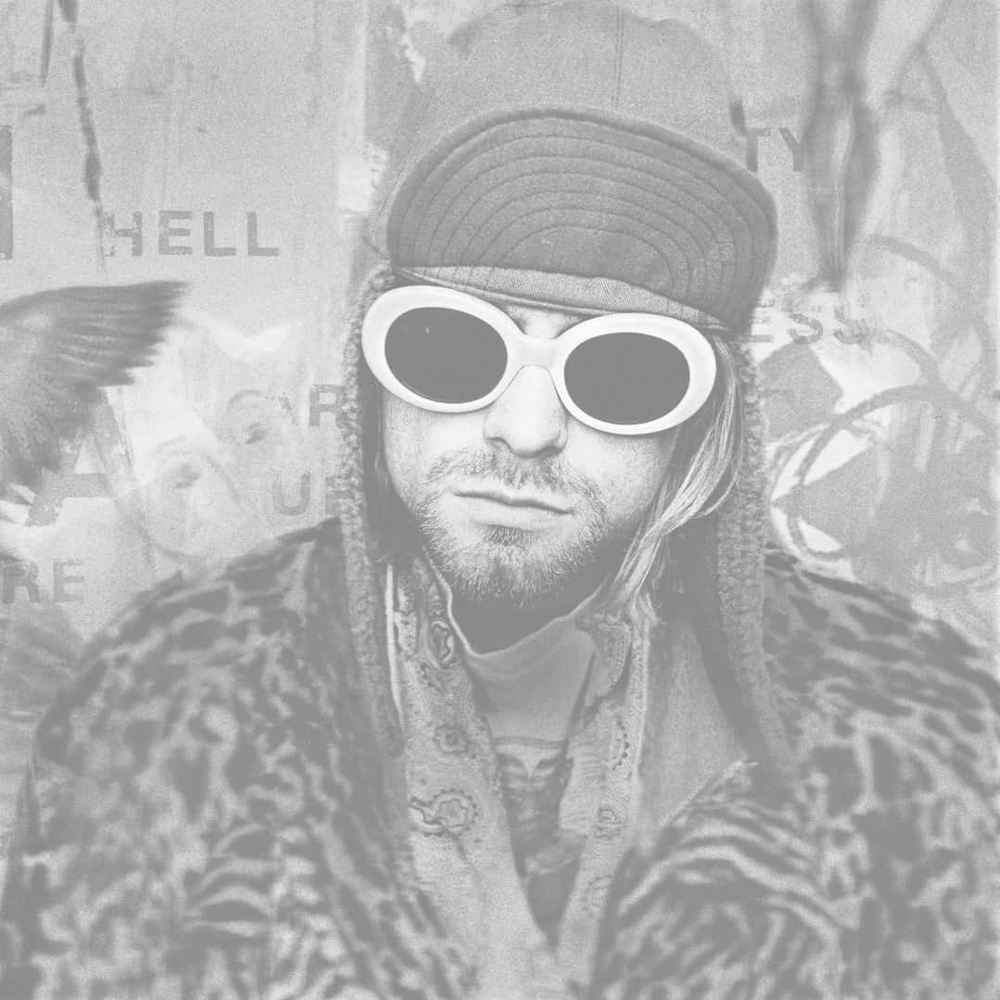

kurt photoshoot
kurt cobain
American singer, songwriter, and musician, best known as the guitarist and frontman of the rock band Nirvana. He is remembered as one of the most iconic and influential rock musicians in the history of alternative music.
01
kurt cobain's life
biography
next

02
smells like teen spirit
nirvana
a rock'n'roll revolution
With the advent of grunge, heavy music was dominating the mainstream for the first time since punk. Nirvana helped change the course of rock music forever